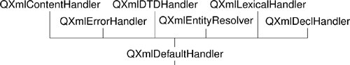
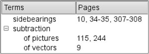

Reading XML with SAXSAX is a public domain de facto standard API for reading XML documents. Qt's SAX classes are modeled after the SAX2 Java implementation, with some differences in naming to match the Qt conventions. For more information about SAX, see http://www.saxproject.org/. Qt provides a SAX-based non-validating XML parser called QXmlSimpleReader. This parser recognizes well-formed XML and supports XML namespaces. When the parser goes through the document, it calls virtual functions in registered handler classes to indicate parsing events. (These "parsing events" are unrelated to Qt events, such as key and mouse events.) For example, let's assume the parser is analyzing the following XML document:
<doc>
<quote>Ars longa vita brevis</quote>
</doc>
The parser would call the following parsing event handlers:
startDocument()
startElement("doc")
startElement("quote")
characters("Ars longa vita brevis")
endElement("quote")
endElement("doc")
endDocument()
The above functions are all declared in QXmlContentHandler. For simplicity, we omitted some of the arguments to startElement() and endElement(). QXmlContentHandler is just one of many handler classes that can be used in conjunction with QXmlSimpleReader. The others are QXmlEntityResolver, QXmlDTDHandler, QXmlErrorHandler, QXmlDeclHandler, and QXmlLexicalHandler. These classes only declare pure virtual functions and give information about different kinds of parsing events. For most applications, QXmlContentHandler and QXmlErrorHandler are the only two that are needed. For convenience, Qt also provides QXmlDefaultHandler, a class that inherits from all the handler classes and that provides trivial implementations for all the functions. This design, with many abstract handler classes and one trivial subclass, is unusual for Qt; it was adopted to closely follow the model Java implementation. We will now review an example that shows how to use QXmlSimpleReader and QXmlDefaultHandler to parse an ad hoc XML file format and render its contents in a QtreeWidget. The QXmlDefaultHandler subclass is called SaxHandler, and the format it handles is that of a book index, with index entries and subentries. Figure 15.1. Inheritance tree for SaxHandler Here's the book index file that is displayed in the QTReeWidget in Figure 15.2:
<?xml version="1.0"?>
<bookindex>
<entry term="sidebearings">
<page>10</page>
<page>34-35</page>
<page>307-308</page>
</entry>
<entry term="subtraction">
<entry term="of pictures">
<page>115</page>
<page>244</page>
</entry>
<entry term="of vectors">
<page>9</page>
</entry>
</entry>
</bookindex>
Figure 15.2. A book index file displayed in a QtreeWidget The first step to implement the parser is to subclass QXmlDefaultHandler:
class SaxHandler : public QXmlDefaultHandler
{
public:
SaxHandler(QTreeWidget *tree);
bool startElement(const QString &namespaceURI,
const QString &localName,
const QString &qName,
const QXmlAttributes &attributes);
bool endElement(const QString &namespaceURI,
const QString &localName,
const QString &qName);
bool characters(const QString &str);
bool fatalError(const QXmlParseException &exception);
private:
QTreeWidget *treeWidget;
QTreeWidgetItem *currentItem;
QString currentText;
};
The SaxHandler class inherits QXmlDefaultHandler and reimplements four functions: startElement(), endElement(), characters(), and fatalError(). The first three functions are declared in QXmlContentHandler; the last function is declared in QXmlErrorHandler.
SaxHandler::SaxHandler(QTreeWidget *tree)
{
treeWidget = tree;
currentItem = 0;
}
The SaxHandler constructor accepts the QtreeWidget we want to populate with the information stored in the XML file.
bool SaxHandler::startElement(const QString & /* namespaceURI */,
const QString & /* localName */,
const QString &qName,
const QXmlAttributes &attributes)
{
if (qName == "entry") {
if (currentItem) {
currentItem = new QTreeWidgetItem(currentItem);
} else {
currentItem = new QTreeWidgetItem(treeWidget);
}
currentItem->setText(0, attributes.value("term"));
} else if (qName == "page") {
currentText.clear();
}
return true;
}
The startElement() function is called when the reader encounters a new opening tag. The third parameter is the tag's name (or more precisely, its "qualified name"). The fourth parameter is the list of attributes. In this example, we ignore the first and second parameters. They are useful for XML files that use XML's namespace mechanism, a subject that is discussed in detail in the reference documentation. If the tag is <entry>, we create a new QtreeWidget item. If the tag is nested within another <entry> tag, the new tag defines a subentry in the index, and the new QtreeWidgetItem is created as a child of the QtreeWidgetItem that represents the encompassing entry. Otherwise, we create the QTReeWidgetItem with treeWidget as its parent, making it a top-level item. We call setText() to set the text shown in column 0 to the value of the <entry> tag's term attribute. If the tag is <page>, we set the currentText to be an empty string. The currentText serves as an accumulator for the text located between the <page> and </page> tags. At the end, we return true to tell SAX to continue parsing the file. If we wanted to report unknown tags as errors, we would return false in those cases. We would then also reimplement errorString() from QXmlDefaultHandler to return an appropriate error message.
bool SaxHandler::characters(const QString &str)
{
currentText += str;
return true;
}
The characters() function is called to report character data in the XML document. We simply append the characters to the currentText variable.
bool SaxHandler::endElement(const QString & /* namespaceURI */,
const QString & /* localName */,
const QString &qName)
{
if (qName == "entry") {
currentItem = currentItem->parent();
} else if (qName == "page") {
if (currentItem) {
QString allPages = currentItem->text(1);
if (!allPages.isEmpty())
allPages += ", ";
allPages += currentText;
currentItem->setText(1, allPages);
}
}
return true;
}
The endElement() function is called when the reader encounters a closing tag. Just as with startElement(), the third parameter is the name of the tag. If the tag is </entry>, we update the currentItem private variable to point to the current QtreeWidgetItem's parent. This ensures that the currentItem variable is restored to the value it held before the corresponding <entry> tag was read. If the tag is </page>, we add the specified page number or page range to the comma-separated list in the current item's text in column 1.
bool SaxHandler::fatalError(const QXmlParseException &exception)
{
QMessageBox::warning(0, QObject::tr("SAX Handler"),
QObject::tr("Parse error at line %1, column "
"%2:\n%3.")
.arg(exception.lineNumber())
.arg(exception.columnNumber())
.arg(exception.message()));
return false;
}
The fatalError() function is called when the reader fails to parse the XML file. If this occurs, we simply display a message box, giving the line number, the column number, and the parser's error text. This completes the implementation of the SaxHandler class. Now let's see how we can make use of it:
bool parseFile(const QString &fileName)
{
QStringList labels;
labels << QObject::tr("Terms") << QObject::tr("Pages");
QTreeWidget *treeWidget = new QTreeWidget;
treeWidget->setHeaderLabels(labels);
treeWidget->setWindowTitle(QObject::tr("SAX Handler"));
treeWidget->show();
QFile file(fileName);
QXmlInputSource inputSource(&file);
QXmlSimpleReader reader;
SaxHandler handler(treeWidget);
reader.setContentHandler(&handler);
reader.setErrorHandler(&handler);
return reader.parse(inputSource);
}
We set up a QtreeWidget with two columns. Then we create a QFile object for the file that is to be read and a QXmlSimpleReader to parse the file. We don't need to open the QFile ourselves; QXmlInputSource does that automatically. Finally, we create a SaxHandler object, we install it on the reader both as a content handler and as an error handler, and we call parse() on the reader to perform the parsing. Instead of passing a simple file object to the parse() function, we pass a QXmlInputSource. This class opens the file it is given, reads it (taking into account any character encoding specified in the <?xml?> declaration), and provides an interface through which the parser reads the file. In SaxHandler, we only reimplemented functions from the QXmlContentHandler and QXmlErrorHandler classes. If we had implemented functions from other handler classes, we would also have needed to call their corresponding setter functions on the reader. To link the application against the QtXml library, we must add this line to the .pro file: QT += xml |